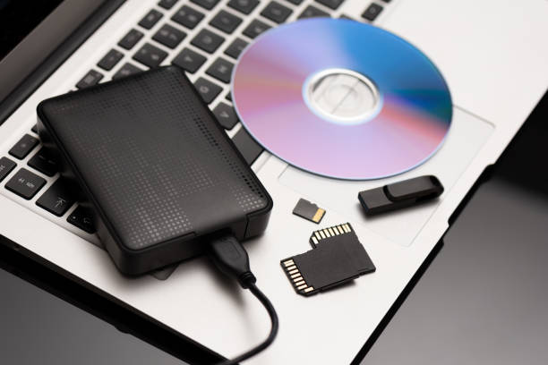

The evolution of mini PCs and their increasing popularity in the tech industry
Posted by on 2024-06-13
In recent years, mini PCs have experienced a significant evolution and have become increasingly popular in the tech industry. These compact yet powerful computers offer a wide range of benefits and are now being embraced by both consumers and professionals alike.
One of the key factors driving the popularity of mini PCs is their small size. These devices are much smaller than traditional desktop computers, making them ideal for those with limited space or those who need a portable computing solution. Mini PCs can easily fit on a desk or be taken on-the-go, allowing users to work or play wherever they go.
Despite their small size, mini PCs are packed with impressive features and capabilities. Many models come equipped with high-performance processors, ample storage space, and advanced graphics cards, making them suitable for a variety of tasks including gaming, multimedia editing, and office work. Additionally, mini PCs often come pre-installed with the latest operating systems and software, ensuring that users have everything they need right out of the box.
Another factor contributing to the rise in popularity of mini PCs is their energy efficiency. These devices consume significantly less power than traditional desktop computers, helping users save on electricity costs while also reducing their carbon footprint. In today's environmentally-conscious world, this is an important consideration for many consumers.
Furthermore, mini PCs offer excellent value for money. Despite their small size and impressive performance capabilities, these devices are often more affordable than larger desktop computers or laptops. This makes them an attractive option for budget-conscious individuals looking to upgrade their computing setup without breaking the bank.
Overall, the evolution of mini PCs has revolutionized the tech industry and provided users with a versatile and efficient computing solution. As these devices continue to improve in terms of performance and features, it is likely that their popularity will only continue to grow in the years to come. Whether you're a casual user looking for a compact yet powerful computer or a professional in need of a reliable workstation, there's no denying the appeal of mini PCs in today's fast-paced digital world.